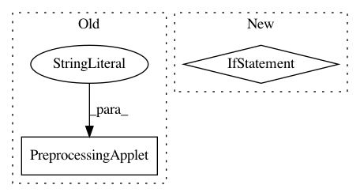

9418883d418ecccd7fe5da4dddffdc01064efb23,ilastik/workflows/carving/splitBodyCarvingWorkflow.py,SplitBodyCarvingWorkflow,__init__,#SplitBodyCarvingWorkflow#Any#Any#Any#Any#Any#,74
Before Change
opDataSelection.DatasetRoles.setValue( ["Raw Data", "Pixel Probabilities", "Raveler Labels"] )
self.preprocessingApplet = PreprocessingApplet(workflow=self,
title = "Preprocessing",
projectFileGroupName="preprocessing")
self.splitBodyCarvingApplet = SplitBodyCarvingApplet(workflow=self,
projectFileGroupName="carving")
After Change
SplitToolParamsSchema = \
{
"_schema_name" : "split-body workflow params",
"_schema_version" : 0.1,
// Input data
"raw_data_info" : JsonConfigParser( DatasetInfo.DatasetInfoSchema ),
"pixel_probabilities_info" : JsonConfigParser( DatasetInfo.DatasetInfoSchema ),
"raveler_labels_info" : JsonConfigParser( DatasetInfo.DatasetInfoSchema ),
In pattern: SUPERPATTERN
Frequency: 3
Non-data size: 2
Instances
Project Name: ilastik/ilastik
Commit Name: 9418883d418ecccd7fe5da4dddffdc01064efb23
Time: 2014-03-26
Author: bergs@janelia.hhmi.org
File Name: ilastik/workflows/carving/splitBodyCarvingWorkflow.py
Class Name: SplitBodyCarvingWorkflow
Method Name: __init__
Project Name: ilastik/ilastik
Commit Name: 9418883d418ecccd7fe5da4dddffdc01064efb23
Time: 2014-03-26
Author: bergs@janelia.hhmi.org
File Name: ilastik/workflows/carving/carvingWorkflow.py
Class Name: CarvingWorkflow
Method Name: __init__
Project Name: ilastik/ilastik
Commit Name: d29d4bfe230a51fb4e016c4d6237337389d98669
Time: 2013-05-17
Author: bergs@janelia.hhmi.org
File Name: ilastik/workflows/carving/carvingWorkflow.py
Class Name: CarvingWorkflow
Method Name: __init__